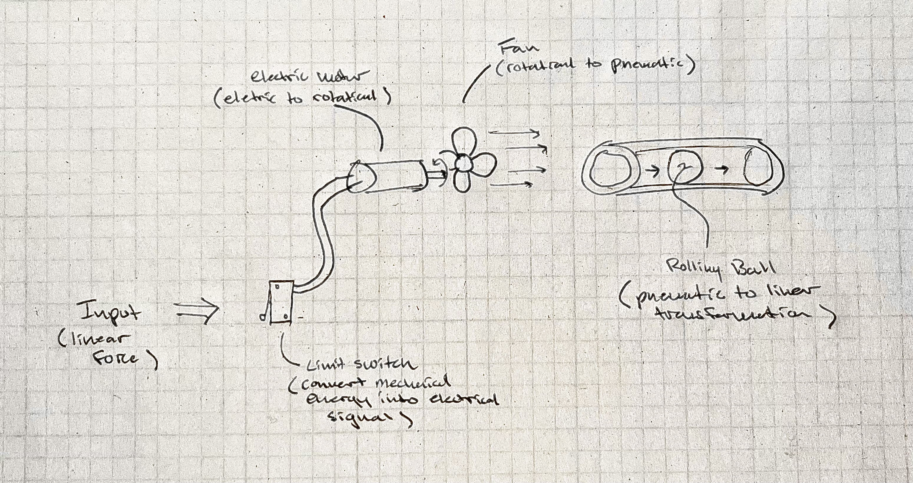
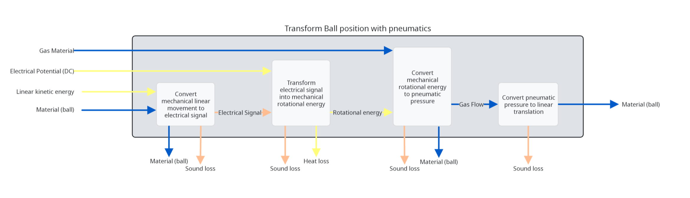
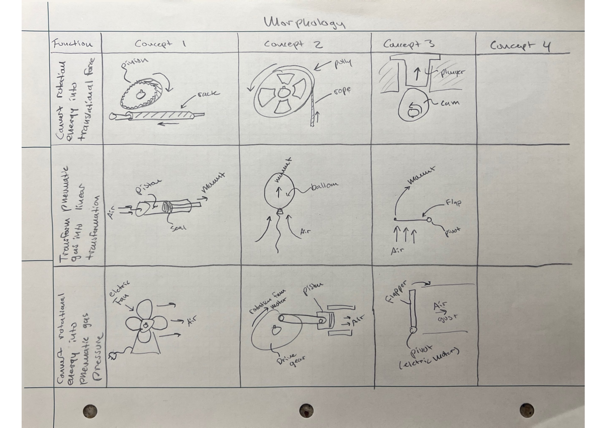

This portfolio documents the design process and development of a Rube Goldberg machine, a complex contraption that performs a simple task through a series of intricate steps. The project is structured into four main phases, each addressing specific aspects of the design process, from problem identification to final evaluation and reflection.
My Rube Goldberg section was designed to complete the task of converting rotational energy (from a previous phase fly wheel) into a stream of water. This Portfolio aims to demonstrate the application of engineering design principles, creativity, and technical skills used throughout the project.
- Phase 1: Presenting and Justifying the Problem and Solution Requirements -
The problem addressed by my section of the Rube Goldberg machine is the conversion of rotational energy from a previous phase flywheel into a stream of water.
Engineering specs were defined to set clear and measurable criteria for the design, ensuring the solution meets the functional requirements and stakeholder needs.
Spec No.
Engineering Spec
Driving Direction
Min/ Max/ Target
1
Number of custom parts
Down
0, 5, 0
2
Total number of hours to fabricate
Down
1, 30, 10
3
Percent of rubric items met
Up
80%, 100%, 100%
4
Input width in inches
Up
1, 12, 8
5
Output width in inches
Down
1, 5, 2
6
Total Cost of materials in USD
Down
10, 100, 20
7
Total number of pinch points
Down
0, 4, 0
8
Electrical current exposure in Amps
Down
0, 10, 5
9
Number of words in final report (Webpage)
Up
1,000, 10,000, 2,000
10
Number of pictures/figures in final report (Webpage)
Up
3, 20, 5
11
Number of design iterations documented
Up
1, 10, 3
Table 1: Engineering Specifications
Stakeholders were identified using a three tier system including Primary, Secondary, and Tertiary stakeholders. Primary stakeholders are those who are directly affected by the problem and solution, secondary stakeholders have an indirect interest, and tertiary stakeholders have a broader societal or environmental interest. Each stakeholder group was analyzed to understand their needs, concerns, and potential impact on the project. The following list illistrates the three types of stakeholders with representations from each category and their needs.
Primary Stakeholders
1. Myself/ My team - Need to design a reliable, easy to fabricate, and functioning product.
2. Instructor - Needs the design and documentation to demonstrate comprehension of learning objectives.
3. Audience / Classmates- Need the assembly to be visually engaging and clearly understandable.
Secondary Stakeholders
1. Previous group in chain - Need to be able to receive a compatible input.
2. Following group in chain - Need to deliver a consistent compatible output.
3. Material suppliers - Readily available parts that are easy to source and affordable.
4. Safety staff - Need the project to minimize hazards.
Tertiary Stakeholders
1. Future employer - Need the project documentation and design portfolio to showcase technical competence and creativity.
2. Future Rube Goldberg machine designers - Need Inspiration for future designs.
3. Future ME 382 students - Need examples of the design process and iterations.
4. University accreditors - Need the project to demonstrate alignment with program learning outcomes.
Based on the analysis of stakeholders and the engineering specs, the following house of quality was established for my section of the Rube Goldberg machine:
Figure 1: House of Quality
Exisiting Rube Goldberg mechanisms can be compared and scored against our existing house of quality requirements. The following mechanisms were evaluated:
Competing Products:
A) Domino chain
B) Ball and ramp
C) Pulley system
These competing products (A though C) can be seen in the house of quality figure above. Each mechanism was graded on how it meets the requirements on a scale from 1 to 5. 1 meaning the mechanism does not meet the requirement at all, and 5 meaning the mechanism fully meets the requirement. It can bee seen that these standard products do not fufill our requirements, therefore we can proceed to design our own solution.
- Phase 2: Generating and Analyzing an Original Solution -
The first step in generating an original solution is to create a list of functions that our design could preform. These functions relate to the porential input and output functions of a typical Rube Goldberg machine.
Function list:
1. Detect input.
2. Secure input.
3. Convert input kinetic energy into signal.
4. Convert electrical energy into mechanical rotational energy.
5. Convert electrical energy into heat.
6. Convert electrical energy into light energy.
7. Convert rotational energy into pneumatic gas pressure.
8. Convert rotational energy into translational force.
9. Transform Light energy into signal energy.
10. Transform pneumatic gas into linear transformation.
Once our list of functions has been defined, we can begin to develop a preliminary product sketch. For this inital design I choose to utilize a input of a linear force and an output of a ball rolling. Figure 2 below dipicts the preliminary sketch that converts linear force to linear transformation using eletrical mechanical energy, eletric to rotational conversion, and pnematic to linear transformations.

Figure 2: Preliminary Product Sketch
The preliminary product sketch was converted into a funtion structure/decomposition diagram show in figure 3 below. This functional decompostion ideates the specific subfuntions necessary for the product to preform using Stone's taxonomy. It also illistrates the function flow of materials, signals, and energy shown in blue, orange, and yellow respectively. The figure flows from left to right throughout the system.

Figure 3: Functional Decomposition Diagram
A morphology table was created to explore the design space and identify potential solutions. Three functions were chosen to be explored in the morphology table; Convert rotational energy into translational force, Transform pneumatic gas into linear transformation, and Convert rotational energy into pneumatic gas pressure. Using the baseline transformations, 9 designs could be created for comparision.

Figure 4: Initial Morphology Table
For my section of the Rube Goldberg machine three functions were chosen to be used as outputs. Three inputs were also supplied by the previous system. The following lists show the input and output options going forward, and nine combinations were ideated as shown in the figures to follow.
Output options:
1. Turn on a 1-2 MOA (1-2" dot size at 100 yards) red laser with a wavelength of 630 - 700 nm. The laser will remain on for a minimum of 5 seconds. The beam will be oriented horizontally and mounted 2" off the ground ± 0.050".
2. Dispense a stream of room temperature water (70°C) at a flow rate of 100mL/sec ± 20mL/sec from a nozzle located 24" ± 0.050" off the ground with a trajectory starting normal to the vertical face (Horizontal output but will be parabolic due to gravity). The stream will remain on for a minimum of 4 seconds.
3. Cut a 4mm diameter black nylon paracord. Construction is 550 lb tensile strength (type III, 550) with 7 inner strands under tension (tied to whatever you want that can produce up to 550 lb of tension). Minimum tension of 5 lbs. The rope will be located 24" off the ground with a minimum of 3" clearance to the support structure. The rope will hang down.
Input options from previous team:
1. 1kg mass traveling at 1m/s horizontally.
2. 2kg mass flywheel of diameter 25cm rotating at 2pi rad/s vertically.
3. 10g mass falling 0.5m vertically.
Each concept was evaluated using the following pugh chart. From the chart two options were deamed acceptable, Concept 4 - Limit switch pump, and Concept 6 - Flywheel sprayer. The final design/ function was choosen to be the Flywheel sprayer.
Figure 14: Pugh Chart
- Phase 3: Detailed Design, Prototyping, and Simulation -
- Phase 4: Evaluation, Reflection, and Recommendations -